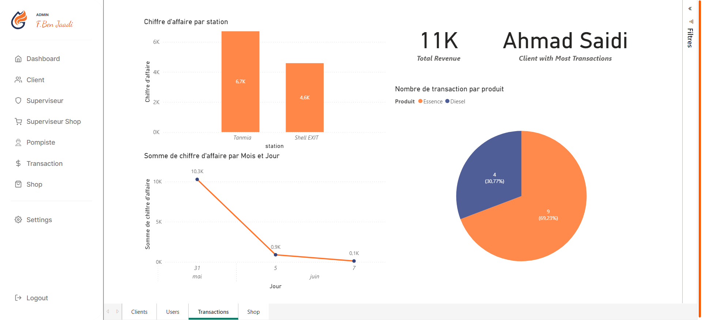
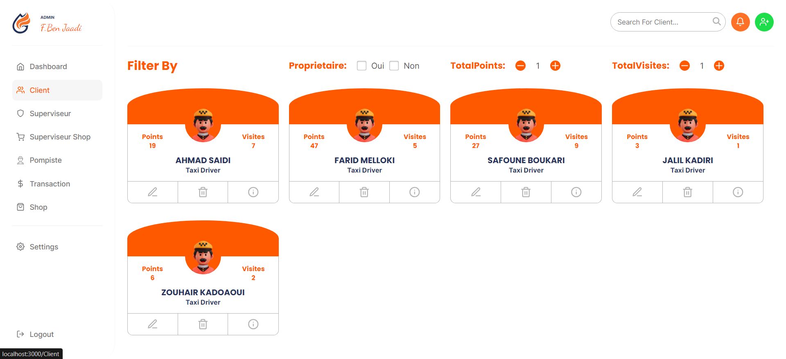
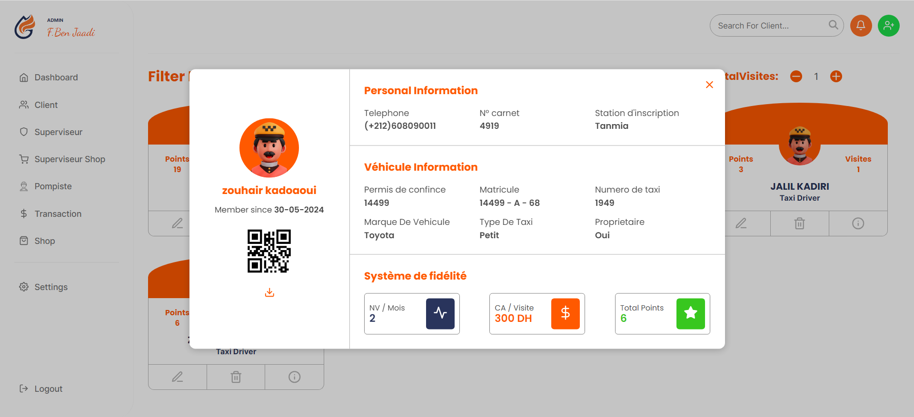
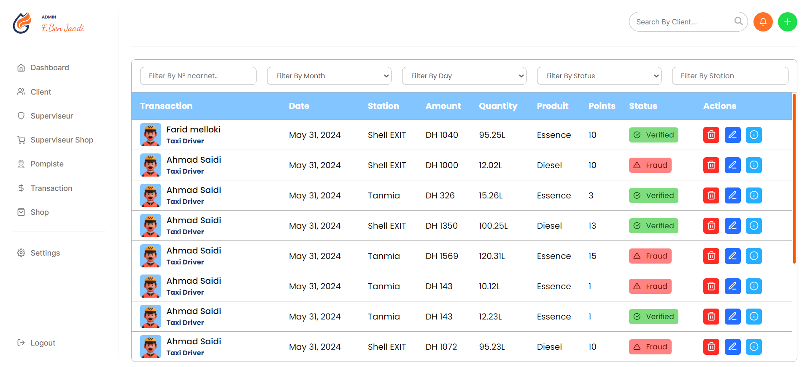
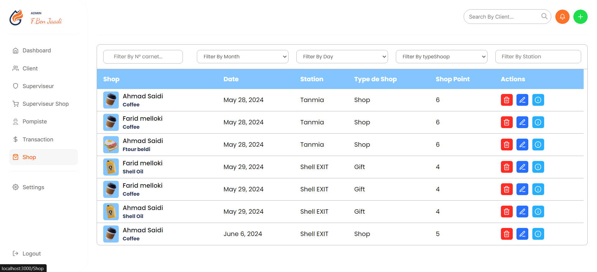

Taxi Driver Loyalty
An admin system for managing taxi driver loyalty, detecting fraudulent transactions with OCR, and analyzing fuel sales data.

Here are a few snapshots of the project UI. These don't show all the features.





🤨 What is this?
This project is a dashboard designed for Sopetrole, a company that distributes fuel to Shell stations in Laayoune, Morocco. The platform enhances taxi driver loyalty by rewarding them with points for refueling at Shell stations. Additionally, it includes fraud detection using OCR, provides real-time business insights with Power BI, and streamlines fuel transaction management.
❓ Why
Sopetrole faced a challenge: only 13% of taxi fuel transactions were made at their stations. To increase this share, a loyalty program was implemented, incentivizing taxi drivers with redeemable points for purchases at station shops. Additionally, the system enhances security by detecting fraudulent transactions using Google Cloud Vision OCR. To further improve efficiency, a QR code scanning system was integrated, allowing pompists to add transactions quickly without manual input.
🔨 Tech Stack
This project is built with modern, cutting-edge tools to ensure a robust, scalable, and seamless user experience. The solution is designed to be efficient, reliable, and adaptable to meet the needs of users.
- Node.js
- React.js
- Redux
- Express.js
- Python
- FastAPI
- MongoDB Atlas
- OCR
- Power BI
🚀 Key Features
The system includes a Taxi Driver Loyalty Program, allowing drivers to earn points for refueling, which can be redeemed at station shops. To ensure transaction security, fraud detection is implemented using OCR and AI for real-time validation. Dynamic dashboards powered by Power BI provide real-time insights into fuel sales. Additionally, the admin management system enables the addition, updating, and deletion of taxi drivers, supervisors, pompists, and shop supervisors. To streamline operations, a QR code scanning feature allows pompists to quickly register transactions, minimizing manual input time and improving efficiency.
🎯 My Role
I was responsible for full-stack development, building both the React.js frontend and the Express.js + FastAPI backend. I implemented Google Cloud Vision OCR for fraud detection, integrated Power BI dashboards, designed the MongoDB Atlas database structure, and developed functionalities for managing taxi drivers, supervisors, pompists, and shop supervisors. Additionally, I implemented a QR code scanning feature to streamline fuel transaction processing.
📊 Challenges & Solutions
The project faced several key challenges, each addressed with tailored solutions. To increase taxi driver loyalty, a reward system was implemented, encouraging drivers to refuel at Sopetrole stations and redeem points at station shops. To detect fraudulent fuel transactions, Google Cloud Vision OCR was integrated for real-time verification, ensuring transaction authenticity. For real-time fuel sales insights, interactive dashboards using Power BI were developed, providing clear and actionable data. Lastly, to reduce transaction processing time for pompists, a QR code scanning feature was introduced, enabling quick and efficient data entry, minimizing manual workload, and enhancing overall operational efficiency.
📎 Live Demo / GitHub
🚧 This project source code is private and not publicly available. However, I’d be happy to discuss my contributions and showcase relevant aspects upon request. Feel free to reach out!